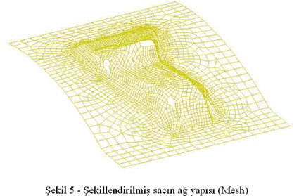
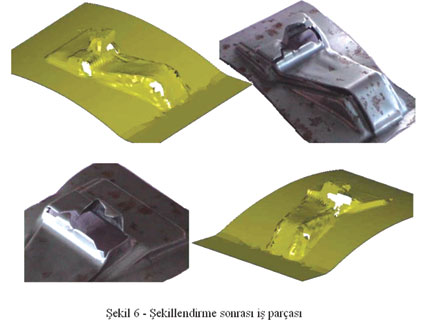
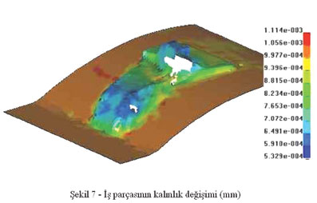
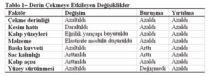

|
8. SONUÇLAR
Karkas braketi için elde edilen sonuçlara parçanýn að yapýsý
etki etmektedir. Þekil 5'den de anlaþýlabileceði gibi parçanýn
mesh yapýsý kritik bölgelerde yoðunlaþmaktadýr. Böylelikle
kritik bölgelerin sonuçlarý daha tutarlý bir þekilde elde
edilebilmektedir.

Hem
deneysel çalýþmada hem de nümerik analizde parçanýn köþelerinde
yýrtýlmalar oluþmuþtur. Bu bölgelerin kalýnlýklarý malzemenin
kritik birim þekil deðiþtirme deðerinin üstünde deforme olmuþtur.
Parçadaki kalýnlýk deðiþimleri ve yýrtýlmalarla ilgi analiz
sonuçlarý ve deneysel çalýþmanýn fotoðraflarý Þekil 6,7'de
verilmektedir.
Þekil 6 incelendiðinde, sonlu elemanlar yöntemiyle elde edilen
sonuçlarla deneysel sonuçlar arasýndaki benzerlik görülmektedir.
Ýþ parçasýnýn sonlu eleman modelinde oluþan yýrtýlmalar deneysel
çalýþma sonunda ortaya çýkan yýrtýlmalarla ayný noktalarda
ve büyüklüklerde olmuþtur.


9.
Sonuçlarýn Deðerlendirilmesi
Yapýlan
araþtýrmalar sonucunda derin çekme iþlemine etki eden faktörler
þu þekilde belirlenmiþtir;
Çekme derinliði, þekillendirilmemiþ sacýn kesim hattý, þekillenecek
sacýn malzemesi, iþ parçasýný sac kalýnlýðý, kalýp yüzeylerinin
geometrik formu, iþ parçasýnýn kalýp yüzeylerine göre açýsý,
süzme kanallarýnýn yerleþimi ve derinliði, pot çemberinin
baský kuvveti, þekillenme iþleminin tekniði (sýcak, soðuk,
çift tesirli yada tek tesirli kalýp), kalýp yüzeylerinin ve
iþ parçasýnýn sürtünmesi (yaðlama, naylon serme vb.). Bu faktörlerin
bazýlarý bilgisayar destekli çözümlerle irdelenmiþtir (Tablo
1).
Bilgisayar
programýndaki parametreler veya üç boyutlu modellerde yapýlan
deðiþiklikler ile bu faktörlerin etkisi gözlenmiþ, bu sayede
her iterasyonda daha baþarýlý kalýp tasarýmlarý yapýlabileceði
gözlenmiþtir.

Ýstenen
parçanýn kalýptan kusursuz çýkmasý; bilgisayar destekli çözümler
olmadan, deneme yanýlma yolu ile yapýldýðýnda, maliyeti oldukça
yüksektir ve uzun zaman alan çalýþmalardýr. Yeni kalýp tasarýmý
en azýndan tahta yada beton prototip kalýplar ile denenip
problemler malzeme ilaveleriyle çözülemiyorsa yeni tasarýmýn
imalatýna geçilmektedir.
Prototip
çalýþmasý yapýlmadan dökümü yapýlan metal kalýplar ise bir
tasarým problemi çýktýðýnda kaynak ile malzeme ilavesi ve
tekrar iþlenme sureti ile düzeltilmeye çalýþýlmaktadýr. Bu
iþlem hem kalýp ömrünü kýsaltmakta hem de imalat süresini
uzatmaktadýr.
Yapýlan
çalýþmalar sonunda soðuk þekillendirme iþlemi için sonlu elemanlar
yöntemi ile ekspilisit analizin tutarlý sonuçlar verdiði ve
tasarýmý yönlendirmek için kullanýlabileceði sonucuna ulaþýlmýþtýr.
Kaynaklar
ANSYS,
2001, Theory of ANSYS (Help files), ANSYS.
Hill, R., 1950, The Mathematical Theory of Plasticity, Oxford
University Press, New York.
Kawka, M., Kakita, T., Makinouchi, A., 1998, Simulation of
multi-step sheet metal forming processes by a static explicit
FEM code, Journal of Materials Processing Technology, 80-81:54-59.
Kýrlý, O, 2003, Derin Çekme ile Soðuk Þekillendirmenin Sonlu
Elemanlar Metodu Yardýmýyla Non-lineer Analizi, Yüksek Lisans
Tezi, Ege Üniversitesi, Makine Mühendisliði Bölümü, Ýzmir.
LS-Dyna, 1996, Theory LS-Dyna (Help files), Livermore Software
Technology Corp. (LSTC).
Mamalis, A.G., Manolakos, D.E., Baldoukas, A.K., 1997, Simulation
of sheet metal forming using explicit finite element techniques:
Effect of material and forming
characteristics Part 1. Deep drawing of cylindrical cups,
Journal of Materials Processing Technology, 72:48-60.
Mamalis, A.G., Manolakos, D.E., Baldoukas, A.K., 1997, Simulation
of sheet metal forming using explicit finite element techniques:
Effect of material and forming characteristics Part 2. Deep
drawing of square cups, Journal of Materials Processing Technology,
72:110-116.
Rojek, J., Onate, E., Postek, E., 1998, Application of explicit
FE codes to simulation of sheet and bulk metal forming processes,
Journal of Materials Processing Technology, 80-81:620-627.
Sarýkanat, M., 2001, Kompozit Malzemelerden Yapýlmýþ Kalýn
Kompozit Kiriþlerin Nümerik Metot Yardýmýyla Analizi, Ege
Üniversitesi Yüksek Lisans Tezi, Ýzmir.
Not: Bu makale MetalMakine
Dergisi web sitesinden alýnmýþtýr.
|